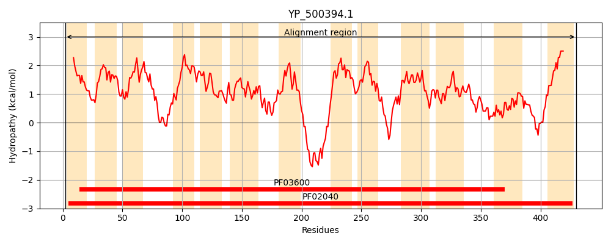
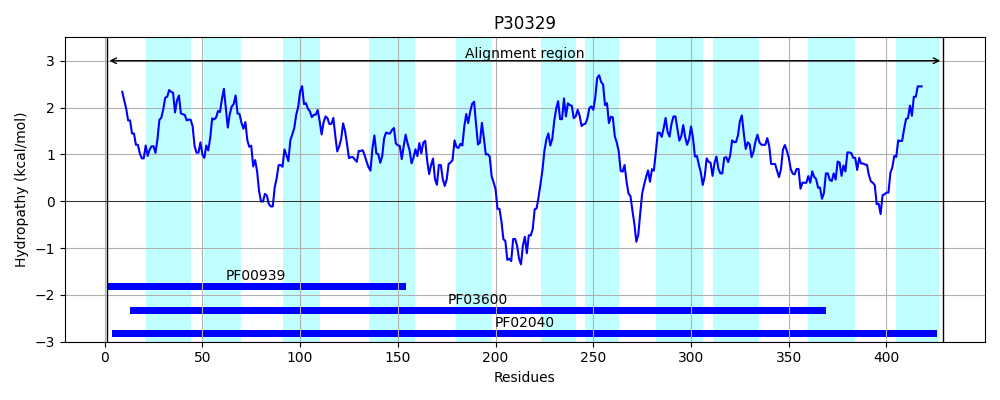
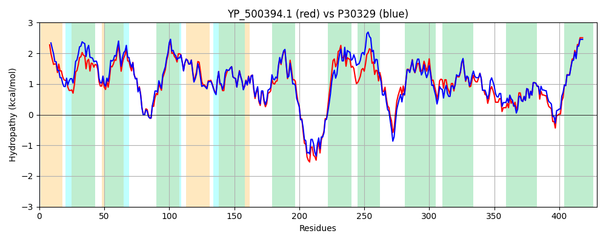

Hit Accession: P30329
Hit TCID: 2.A.45.1.1
Hit Description: gnl|BL_ORD_ID|9713 gnl|TC-DB|P30329|2.A.45.1.1 ARSENICAL PUMP MEMBRANE PROTEIN - Staphylococcus aureus.
Mach Len: 429
e:0.000000
Query TMS Count : 13
Hit TMS Count: 11
TMS-Overlap Score: 11.450000
Predicted Substrates:CHEBI:5584;hydron
BLAST Alignment:
Score: 1806 , Bit scores: 700 bits, E-value: 0.0e+00, Alignment length: 429, Percentage identity: 81
Query: 2 MTTLATLIFLVTLLFVLWQPKGLDIGITALTGAFIAVITGVVSFSDVFEVTGIVWNATLTFVSVILISLILDKVGLFEWSAIHMLHASKGNGLKMFVYIILLGAIVAAFFANDGAALILTPIVLAMVKNIGFSKRAIFPFIIASGFIADTTSLPLIVSNLVNIISADYFHVGFVRYFSRMIIPNLFSLLASIIVLWLYFRKAIPKTFDDNNIKHPKDAINDLKLFKISWIVLVILLFGYLISKFTKIPVSIFTGIIAFIFLMLARKSNAVNIKQVIKGAPWNIVLFSIGMYIVVFGLRNAGITLILAKILEYISNYGLFSTILGMGFISAFLSSIMNNMPTVLIDAIAIGQSNVHGMLKEGLIYANVIGSDLGPKITPIGSLATLLWLHVLTQKDVKISWGTYFKTGIIITIPVLFITLIGLYLTLIIF 430
MT LA +IFL+TL FV+WQPKGLDIGITAL GA +A+ITGVVS SDV EVTGIVWNATLTFV+VILISLILD++G FEWSAIHM+ AS GNGLKMFV+I+LLGAIVAAFFANDGAALILTPIVLAMV+N+GF+++ IFPFIIASGFIADTTSLPLIVSNLVNI+SADYF +GF+ YFSRMIIPN+FSL+ASI+VLWLYFRK+IPKTFD N+ PK AI D KLFK+SWIVL +LL GYL+S+F +IPVSI GIIAFIF++LARKS AV+ KQVIKGAPWNIV+FSIGMY+VVFGL+N GIT IL +L ISNYGLFS+I+GMGFI+AFLSSIMNNMPTVLIDAIAIGQS+ G+LKEG++YANVIGSDLGPKITPIGSLATLLWLHVLTQK VKISWGTYFKTGIIITIPVLF+TL+GLYLTLIIF
Sbjct: 1 MTILAIVIFLLTLTFVIWQPKGLDIGITALIGAVVAIITGVVSLSDVLEVTGIVWNATLTFVAVILISLILDEIGFFEWSAIHMVKASNGNGLKMFVFIMLLGAIVAAFFANDGAALILTPIVLAMVRNLGFNQKVIFPFIIASGFIADTTSLPLIVSNLVNIVSADYFDIGFIEYFSRMIIPNIFSLIASILVLWLYFRKSIPKTFDTENLSDPKSAIKDSKLFKLSWIVLAVLLVGYLVSEFIQIPVSIIAGIIAFIFVILARKSKAVHTKQVIKGAPWNIVVFSIGMYLVVFGLKNVGITTILGDVLTNISNYGLFSSIMGMGFIAAFLSSIMNNMPTVLIDAIAIGQSSATGILKEGMVYANVIGSDLGPKITPIGSLATLLWLHVLTQKGVKISWGTYFKTGIIITIPVLFVTLLGLYLTLIIF 429 | Protein Hydropathy Plots: |
|---|
|  |  |
Pairwise Alignment-Hydropathy Plot:
|
|---|
|  |